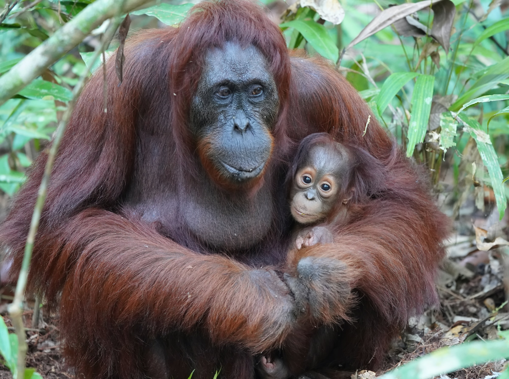
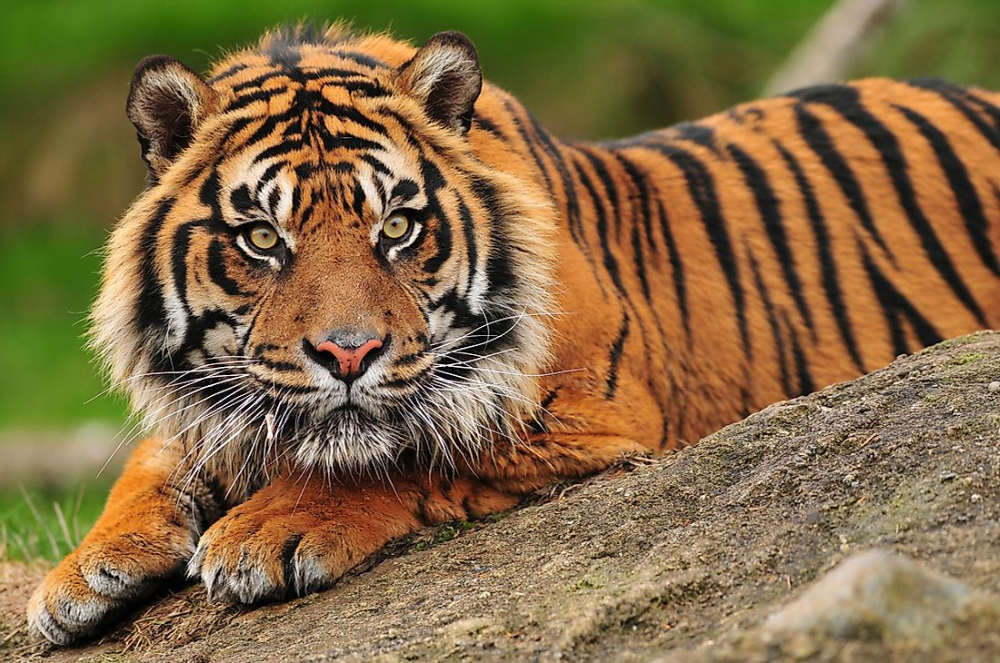
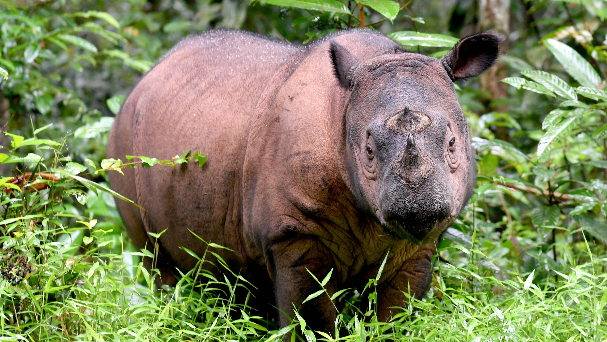

Palm oil is in everything from snack foods like chips and ice cream to household items like soaps, lotions, toothpaste, and yes, your laundry detergent. Palm oil has become the most widely used vegetable oil on Earth. Growing demand for palm oil means clearing rainforests, which leads to destroying hundreds—even thousands—of years of carbon storage through the destruction of peatlands and decimating wildlife habitats. Many palm plantations are concentrated in Indonesia, which is also home to a diverse ecosystem of wildlife. The results are devastating. In the past 65 years, the population of Orangutans has decreased by 50%.
Orangutans live in the rainforests of Indonesia. They are the largest arboreal mammal, spending most of their time in trees. Long, powerful arms and grasping hands and feet allow them to move through the branches. These great apes share 96.4% of our genes and are highly intelligent creatures. Orangutans are “gardeners” of the forest, playing a vital role in seed dispersal in their habitats. Orangutans’ extremely low reproductive rate makes their populations highly vulnerable.

Orangutan
Close
Where palm oil plantations now stand, there were once diverse rainforest habitats that Sumatran tigers once called home.
This subspecies was once found across several parts of the Sunda islands in Indonesia. Today, all remaining Sunda tigers are found only in Sumatra, now that tigers in Java and Bali are extinct. Sumatran tigers are distinguished by heavy black stripes on their orange coats. The last of the Sunda island tigers—estimated to be fewer than 400 today—are holding on for survival in the remaining patches of forest on the island of Sumatra. Accelerating deforestation from palm oil and acacia farming and rampant poaching mean this noble creature could end up extinct like its Javan and Balinese counterparts.
In Indonesia, anyone caught hunting tigers could face jail time and steep fines. But despite increased efforts in tiger conservation—including strengthening law enforcement and antipoaching capacity—a substantial market remains in Sumatra and other parts of Asia for tiger parts and products. Sunda tigers are losing their habitat and prey fast from increasing human encroachment, and poaching is an ever-present threat.

Sumatran Tiger
Close
Deforestation and poaching has driven the Sumatran rhino population to down to just 80.
Sumatran rhinos are the smallest of the living rhinoceroses and the only Asian rhino with two horns. They are covered with long hair and are more closely related to the extinct woolly rhinos than any of the other rhino species alive today. Calves are born with a dense covering that turns reddish-brown in young adults and becomes sparse, bristly and almost black in older animals. Sumatran rhinos compete with the Javan rhino for the unenviable title of most threatened rhino species. While surviving in possibly greater numbers than the Javan rhino, Sumatran rhinos are more threatened due to habitat loss and fragmentation from palm oil plantations and acacia plantations. The remaining animals survive in small, fragmented non-viable populations, and with limited possibilities to find each other to breed, its population decline continues. Just two captive females have reproduced in the last 15 years. Today, the species only survives on the Indonesian islands of Sumatra and Borneo.

Sumatran Rhino
Close
These animals are fighting for survival, and if we don't act, they might not exist at all in just a few short years.